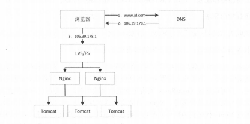

一、交易型系统设计的一些原则
1.在设计系统时，应该多思考墨菲定律：
- 任何事情都没有表面看起来那么简单
- 所有的事都会比你预计的时间长
- 可能出错的事总会出错
- 如果你担心某种情况发生，那么它就更有可能发生
2.系统划分时，要思考康威定律：
- 系统架构是公司组织架构的反映
- 应该按照业务闭环进行系统拆分/组织架构划分，实现闭环/高内聚/低耦合，减少沟通成本
- 如果沟通出现问题，那么就应该考虑进行系统和组织架构的调整
- 在合适时机进行系统拆分，不要一开始就把系统/服务拆得非常细，虽然闭环，但是每个人维护的系统多，维护成本高
3.在有限资源的情况下，一定是先解决当下最核心的问题，预测并发现未来可能出现的问题，一步步解决最痛点的问题，即满足需求的系统是不断迭代优化出来的
A.高并发原则
1.无状态：比较容易进行水平扩展，应用无状态，配置文件有状态
2.拆分：在系统设计初期，是做一个大而全的系统还是按功能模块拆分系统，这个需要根据环境进行权衡
- 系统维度：按照系统功能/业务拆分
- 功能维度：对一个系统进行功能再拆分
- 读写维度：根据读写比例特征进行拆分
- AOP维度：根据访问特征，按照AOP进行拆分
- 模块维度：按照基础或者代码维护特征进行拆分
3.服务化
- 判断是不是只需要简单的单点远程服务调用，单机不行集群是不是就可以解决？在客户端注册多台机器并使用Nginx进行负载均衡是不是就可以解决？随着调用方越来越多，应该考虑使用服务自动注册和发现（Dubbo使用ZooKeeper）
- 考虑服务的分组/隔离
- 后期随着调用量的增加还要考虑服务的限流、黑白名单等
- 进程内服务->单机远程服务->集群手动注册服务->自动注册和发现服务->服务的分组/隔离/路由->服务治理如限流/黑白名单
4.消息队列
- 用来解耦一些不需要同步调用的服务或者订阅一些自己系统关心的变化
- 可以实现服务解耦（一对多消费）、异步处理、流量削峰/缓冲等
- 要注意处理生产消息失败，以及消息重复接收时的场景
- 大流量缓冲（电商大促等），牺牲强一致性，而保证最终一致性，需要考虑并发处理和重复处理的问题
- 在使用了消息异步机制的场景下，可能存在消息的丢失，需要考虑进行数据校对和修正来保证数据的一致性和完整性
5.数据异构
- 对订单表进行异构，异构一套用户订单表，按照用户ID进行分库分表，还需要考虑对历史订单数据进行归档处理
- 数据闭环如商品详情页，通过如MQ机制接收数据变更，然后原子化存储到合适的存储引擎，如Redis或持久化KV存储；使用数据聚合，前端就可以一个调用拿到所有数据，一般存储在KV存储中；前端通过一次或少量几次调用拿到所需要的数据；
- 如果一次需要多个数据，可以考虑使用Hash Tag机制将相关的数据聚合到一个实例
6.缓存银弹
- 浏览器缓存：设置请求过期时间，如对响应头Expires、Cache-control进行控制，适用于对实时性不太敏感的数据
- APP客户端缓存：一般会在大促之前把APP需要访问的一些素材提前下发到客户端进行缓存
- CDN缓存：将页面、活动页、图片推送到离用户最近的CDN节点，要考虑URL的设计
- 接入层缓存：考虑使用如Nginx搭建一层接入层，URL重写、一致性哈希、proxy_cache、proxy_cache_lock、shared_dict
- 应用层缓存：Redis等
- 分布式缓存：Redis集群
7.并发化
B.高可用原则
1.降级
- 开关集中化管理：通过推送机制把开关推送到各个应用
- 可降级的多级读服务：比如服务调用降级为只读本地缓存、只读分布式缓存、只读默认降级数据
- 开关前置化：如架构是Nginx->Tomcat，可以将开关前置到Nginx接入层
- 业务降级：把一些同步调用改成异步调用，优先处理高优先级数据或特殊特征的数据
2.限流
- 恶意请求流量只访问到cache
- 对于穿透到后端应用的流量可以考虑使用Nginx的limit模块处理
- 对于恶意IP可以使用nginx deny进行屏蔽
3.切流量
- DNS：切换机房入口
- HttpDNS：主要APP场景下，在客户端分配好流量入口，绕过运营商LocalDNS并实现更精准流量调度
- LVS/HaProxy：切换故障的Nginx接入层
4.可回滚：版本化
C.业务设计原则
1.防重设计：考虑防重key、防重表
2.幂等设计：在重复消息消费时进行幂等处理
3.流程可定义
4.状态与状态机：正向状态（付款、发货）和逆向状态（取消、退款）应该根据系统和特征来决定要不要分离存储，状态设计时应有状态轨迹，方便跟踪当前订单的轨迹并记录相关日志，还有订单状态的变迁以及并发状态修改问题
5.后台系统操作可反馈：需要考虑效果的可预览，可反馈
6.后台系统审批化：对于有些重要的后台功能需要设计审批流，并记录日志，从而保证操作可追溯、可审计
7.文档和注释：在一个系统发展的一开始就应该有文档库（设计架构、设计思想、数据字典/业务流程、现有问题），业务代码和特殊需求都要有注释
8.备份：代码备份和人员备份
二、负载均衡与反向代理
1.外网DNS应该用来实现用GSLB（全局负载均衡）进行流量调度，如将用户分配到离他最近的服务器上以提升体验
2.对于内网DNS，可以实现简单的轮询负载均衡，但会有一定的缓存时间并且没有失败重试机制，我们可以考虑选择如HaProxy和Nginx
3.Nginx一用于七层负载，其吞吐量是有一定限制的，为了提升整体吞吐，会在DNS和Nginx之间引入接入层，如使用LVS、F5可以做四层负载均衡，即首先DNS解析到LVS/F5、然后LVS/F5转发给Nginx，再由Nginx转发给后端RealServer

4.Nginx目前提供了HTTP（ngx_http_upstreamm_module）七层负载均衡，1.9.0版本支持TCP（ngx_stream_upstream_module）四层负载均衡
5.二层负载均衡是通过改写报文的目标MAC地址为上游服务器MAC地址，源IP地址和目标IP地址是没有变的，负载均衡服务器和真实服务器共享同一个VIP，如LVS DR工作模式
6.四层负载均衡是根据端口将报文转发到上游服务器（不同的IP地址+端口），如LVS NAT模式、HaProxy
7.七层负载均衡是根据端口号和应用层协议如HTTP协议的主机名、URL，转发报文到上游服务器（不同的IP地址+端口），如HaProxy、Nginx
A.upstream配置
1.在http指令下配置upstream即可
2.主要配置：
- IP地址和端口
- 权重：默认是1，越高分配给这台服务器的请求就越多
B.负载均衡算法
1.用来解决用户请求到来时如何选择upstream server进行处理，默认采用的是round-robin(轮询)，同时支持ip_hash
2.hash key [consistent]，对某个key进行哈希或者使用一致性哈希算法进行负载均衡，建议考虑使用一致性哈希算法
3.least_conn，将请求均衡到最少活跃连接的上游服务器
C.失败重试
1.主要两部分配置：
- upstream server：server xxxx:80 max_fails=2 fail_timeout=10s weight=1;...
- proxy_pass：配置proxy_next_upstream相关配置，proxy_next_upstream、proxy_next_upstream_timeout、proxy_next_upstream_tries
D.健康检查
1.nginx对上游服务器的健康检查默认采用的是惰性策略
2.TCP心跳检查：check interval=3000 rise=1 fall=3 timeout=2000 type=tcp;
3.HTTP心跳检查：
- check_http_send "HEAD /status HTTP/1.0\r\n\r\n";
- check_http_expect_alive http_2xx http_3xx;
3.使用的是opensresty模块，安装nginx之前需要先打nginx_upstream_check_module补丁
E.其他配置
1.备份上游服务器，backup
2.不可用上游服务器，down
F.长连接
1.可以通过keepalive指令配置长连接数量
G.HTTP反向代理
1.反向代理除了实现负载均衡之外，还提供如缓存来减少上游服务器的压力
2.还可以开启gzip压缩，减少网络传输的数据包大小
H.HTTP动态负载均衡
1.Consul是一款开源的分布式服务注册与发瑞系统，通过HTTP API可以使得服务注册、发现实现起来非常简单
2.Consul+Consul-template

2.Consul+OpenResty

I.Nginx四层负载均衡
1.静态负载均衡
- 启用ngx_stream_core_module，安装Nginx时，添加--with-stream
- 配置在stream指令下
- 可配置数据库连接
2.动态负载均衡
- nginx-upsync-module，提升了HTTP七层动态负载均衡，动态更新上游服务器不需要reload nginx
三、隔离术
1.隔离是指将系统或资源分割开，系统隔离是为了在系统发生故障时，能限定传播范围和影响范围，即发生故障后不会出现滚雪球效应，从而保证只有出问题的服务不可用，其他服务还是可用的
2.资源隔离通过隔离来减少资源竞争，保障服务间的相互不影响和可用性
A.线程隔离
1.主要是指线程池隔离，在实际使用时，我们会把请求分类，然后交给不同的线程池处理

B.进程隔离
1.在公司发展初期，一般是先从零到一，不会一上来就进行系统拆分，这样就会开发出一些大而全的系统，系统中的一个模块/功能出现问题，整个系统就不可用了
2.通过将系统拆分为多个子系统来实现物理隔离，通过进程隔离使得某一个子系统出现问题时不会影响到其他子系统

C.集群隔离
1.随着系统的发展，单实例服务无法满足需求，此时需要服务化技术，通过部署多个服务形成服务集群，来提升系统容量

D.机房隔离
1.随着对系统可用性的要求，会进行多机房部署，每个机房的服务都有自己的服务分组，本机房的服务应该只调用本机房服务，不进行跨机房调用
2.当一个机房服务发生问题时，可以通过DNS/负载均衡将请求全部切到另一个机房，或者考虑服务能自动重试其他机房的服务
3.一种办法是根据IP（不同机房IP段不一样）自动分组，还有一种较灵活的办是通过在分组名中加上机房名
E.读写隔离
1.通过主从模式将读和写集群分离
F.动静隔离
1.将动态内容和静态资源分离，将静态资源放在CDN上
G.爬虫隔离
1.爬虫和正常流量的比例能达到5:1，甚至更高，一种解决办法是通过限流解决，另一种解决办法是在负载均衡层面将爬虫路由到单独集群，Nginx即可配置
2.使用OpenResty，不仅对爬虫user-agent过滤，还会过滤一些恶意IP ，可以考虑IP+Cookie的方式
H.资源隔离
1.最常见的资源，如磁盘、CPU、网络，这些宝贵的资源，都会存在竞争问题
I.使用Hystrix实现隔离
1.Hystrix是Netflix开源的一款针对分布式系统的延迟和容错库，目的是用来隔离分布式服务故障
2.提供线程和信号量隔离，以减少不同服务之间资源竞争带来的相互影响：提供优雅降级机制；提供熔断机制使得服务可以快速失败，而不是一直阻塞等待服务响应，并能从中快速恢复
3.解决的问题：
- 限制调用分布式服务的资源使用，某一个调用的服务出现问题不会影响其他服务调用，通过线程池隔离和信号量隔离实现
- 提供了优雅降级机制：超时降级、资源不足时（线程或信号量）降级，降级后可以配合降级接口返回拖底数据
- 提供了熔断器实现，当失败率达到阈值自动触发降级（如因网络故障/超时造成的失败率高），熔断器触发的快速失败会进行快速恢复
- 提供了请求缓存、请求合并实现
J.基于Servlet3实现请求隔离
四、限流详解
1.限流的目的是通过对并发访问/请求进行限速或者一个时间窗口内的请求进行限速来保护系统，一旦达到限制速率则可以拒绝服务（定向到错误页或告知资源没有了）、排队或等待（比如秒杀、评论、下单）、降级（返回兜底数据或默认数据）
2.在压测时我们能找出每个系统的处理峰值，然后通过设定峰值阈值，来防止系统过载时，通过拒绝处理过载的请求来保障系统可用，另外，也应根据系统的吞吐量、响应时间、可用率来动态调整限流阈值
3.常见的限流有
限制总并发数（比如数据库连接池、线程池）
限制瞬时并发数（如Nginx的limit_conn模块）
限制时间窗口内的平均速率（如Guava的RateLimiter、Nginx的limit_req模块，用来限制每秒的平均速率）
限制远程接口调用速率
限制MQ的消费速率
还可以根据网络连接数、网络流量、CPU或内存负载来限流
4.缓存目的是提升系统访问速度和增大系统处理能力，可谓是抗高并发的银弹。降级是当服务出问题或者影响到核心流程的性能，需要暂时屏蔽掉，待高峰过去或者问题解决后再打开的场景
A.限流算法
1.令牌桶算法：是一个存放固定容量令牌的桶，按照固定速率往桶里添加令牌
2.漏桶算法：漏桶作为计量工具（The Leaky Bucket Algorithm as a Meter）时，可以用于流量整形（Traffic Shaping）和流量控制（Traffic Policing）
B.应用级限流
1.限流总资源数：可以使用池化技术，如连接池、线程池
2.限流总并发/连接/请求数：Tomcat配置、MySQL（max_connections）、Redis（tcp-backlog）
3.限流某个接口的总并发/请求数：Java的AtomicLong或Semaphore
C.分布式限流
1.Redis+Lua
2.Nginx+Lua
D.接入层限流
1.接入层通常指请求流量的入口，该层的主要目的有：负载均衡、非法请求过滤、请求聚合、缓存、降级、限流、A/B测试、服务质量监控等
2.ngx_http_limit_conn_module，limit_conn是对某个key对应的总的网络连接数进行限流，可以按照IP来限制IP维度的总连接数，或者按照服务域名来限制某个域名的总连接数，只有被Nginx处理的且已经读取了整个请求头的请求连接才会被计数器统计
3.ngx_http_limit_req_module，limit_req是漏桶算法实现，用于对指定key对应的请求进行限流，比如按照IP维度限制请求速率
4.lua-resty-limit-traffic，OpenResty了Lua限流模块，可以按照更复杂的业务逻辑进行动态限流处理，提供了limit.conn和limit.req实现
E.节流
1.我们想在特定埋单窗口内对重复的相同事件最多只处理一次，或者想限制多个连续相同事件最小执行时间间隔，可使用节流（Throttle）实现，其防止多个相同事件连续重复执行，主要有：throttleFirst、throttleLast、throttleWithTimeout
2.throttleFirst/throttleLast
- 是指在一个时间窗口内，如果有重复的多个相同事件要处理，则只处理第一个或最后一个，其相当于一个事件频率控制器，把一段时间内重复的多个相同事件变为一个，减少事件处理频频率，从而减少无用处理
- 前端开发可以使用jquery-throttle-debounce-plugin实现
- Android开发可以使用RxAndroid实现
3.throttleWithTimeout
- 也叫作debounce（去抖），限制两个连续事件的先后执行时间不得小于某个时间窗口
- 当两个连续事件的时间间隔小于最小间隔时间窗口，就会丢弃上一个事件，而如果最后一个事件等待了最小间隔时间窗口后还没有新的事件到来，那么会处理最后一个事件
- 可用于搜索关键词自动补全等功能
五、降级特技
1.当访问量剧增、服务出现问题（如响应时间长或不响应）或非核心服务影响到核心流程的性能时，仍然需要保证服务还是可用的，即使是有损服务。系统可以根据一些关键数据进行自动降级，也可以配置开关实现人工降级
2.降级的最终目的是保证核心服务可用，即使是有损的。而且有些服务是无法降级的（如购物车、结算）。降级也需要根据系统的吞吐量、响应时间、可用率等条件进行手工降级或自动降级
A.降级预案
1.参考日志级别设置预案
- 一般：有些服务偶尔因为网络抖动或者服务正在上线而超时，可以自动降级
- 警告：有些服务在一段时间内成功率有波动，可以自动降级或人工降级并发送警告
- 错误：可用率低于90%，或数据库连接池用完了，或访问量突然猛增到系统能承受的最大阈值
- 严重错误：因为特殊原因数据出现错误，需要紧急人工降级
2.降级按照是否自动化可分为：自动开关降级和人工开关降级
3.降级按照功能可分为：读服务降级和写服务降级
4.降级按照处于系统层次可分为：多级降级
5.降级的功能点主要从服务器端链路考虑，即根据用户访问的服务调用链路来梳理哪里需要降级
- 页面降级
- 页面片段降级
- 页面异步请求降级
- 服务功能降级
- 读降级：如多级缓存模式，如果后端服务有问题，则可以降级为只读缓存，适用于对读一致性要求不高的场景
- 写降级：秒杀抢购，可以只进行Cache的更新，然后异步扣减库存到DB，保证最终一致性即可，此时可以将DB降级为Cache
- 爬虫降级：大促活动时，可以将爬虫流量导向静态页或者返回空数据，从而保护后端稀缺资源
- 风控降级：抢购/秒杀等业务，完全可以识别机器人、用户画像或者根据用户风控级别进行降级处理，直接拒绝高风险用户
B.自动开关降级
1.超时降级
- 当访问的数据库/HTTP服务/远程调用响应慢或者长时间响应慢，且该服务不是核心服务的话，可以在超时后自动降级
- 如果是调用别人的远程服务，则可以和对方定义一个服务响应最大时间，如果超时了，则自动降级
- 在实际场景中一定要配置好超时时间和超时重试次数及机制
2.统计失败次数降级：当失败调用次数达到一定阈值自动降级（熔断器），然后通过异步线程去探测服务是否恢复了
3.故障降级：要调用的远程服务挂掉了，则可以直接降级，降级后的处理方案：默认值（比如库存挂了返回默认） 、兜底数据（比如广告挂了返回提前准备好的静态页面）、缓存
4.限流降级：当达到限流阈值时，后续请求会被降级，降级后的处理方案：排队页面、无货、错误页
C.人工开关降级
1.开关可以存放到配置文件、数据库、Redis/ZooKeeper，可以定期同步开关数据，然后通过判断某个KEY的值来决定是否降级
2.对于新开发的服务进行灰度测试，就需要设置开关，还有多机房服务，也可以通过开关完成
3.还有一引起是因为功能问题需要暂时屏蔽掉某些功能
D.读服务降级
1.一般采取的策略有：暂时切换读（降级到读缓存、降级走静态化）、暂时屏蔽读（屏蔽读入口、屏蔽某个读服务）
2.我们会在接入层、应用层设置开关，当分布式缓存、RPC服务/DB有问题时自动降级为不调用，适用于读一致性要求不高的场景
3.页面降级、页面片段降级、页面异步请求降级都是读服务降级，目的是丢卒保帅
4.动态化降级为静态化
5.静态化降级为动态化
E.写服务降级
1.大多数场景下是不可降级的，不过可以：将同步操作转换为异步操作、限制写的量/比例（如评论开关量大时不可见）
F.多级降级
1.降级是离用户走越近越对系统保护得好，因为业务的复杂性导致越到后端QPS/TPS越低
- 页面JS降级开关：控制页面功能降级
- 接入层降级开关：控制请求入口的降级
- 应用层降级开关：控制业务的降级
G.配置中心
1.应用层API封装
2.使用配置文件实现开关配置
3.使用配置中心实现开关配置：ZooKeeper、Diamond、Disconf、Etcd 3、Consul
H.使用Hystrix实现降级
I.使用Hystrix实现熔断
六、超时与重试机制
A.简介
1.如果应用不设置超时，则可能会导致请求响应慢，慢请求累积导致连锁反应，甚至造成应用雪崩
2.读服务天然适合重试，而写服务大多不能重试（如果写服务是幂等的，则重试是允许的），重试次数太多会导致多倍请求流量
3.在进行代码Review时，一定记得Review超时与重试机制
4.超时与重试机制：
- 代理层超时与重试
- Web容器超时
- 中间件客户端超时与重试
- 数据库客户端超时
- NoSQL客户端超时
- 业务超时
- 前端Ajax超时
B.代理层超时与重试
1.Nginx
- client_header_timeout time：设置读取客户端请求头超时时间，默认为60s，响应408，如果在些超时时间内客户端没有发送完请求头
- client_body_timeout time：设置读取客户端内容体超时时间，默认为60s，响应408，两次成功读操作间隔时间，而不是发送整个请求体超时时间
- send_timeout_time：设置发送响应到客户端的超时时间，默认60s，两次成功写操作间隔时间，而不是发送整个响应的超时时间
- keepalive_timeout timeout [header_timeout]：设置HTTP长连接超时时间，要配合keepalive_disable和keepalive_requests一起使用
2.DNS解析超时设置
- resolver_timeout 30s：设置DNS解析超时时间，默认30s，配合resolver address ... [valid=time]进行DNS域名解析
3.代理超时设置
- proxy_connect_timeout time：与后端/上游服务器建立连接的超时时间
- proxy_read_timeout time：设置从后端/上游服务器读取响应的超时时间
- proxy_send_timeout time：设置往后端/上游服务器发送请求的超时时间
- proxy_next_upstream error | timeout | invalid_header | http_500 | http_502 | http_503 | http_504 | http_403 | http_404 | non_idempotent | off ...：配置什么情况下需要请求下一台上游服务器进行重试ZXCV
- proxy_next_upstream_tries number：设置重试次数，指所有请求次数，默认0表示不限制
- proxy_next_upstream_timeout time：设置重试最大超时时间，默认0表示不限制
- upstream存活超时，max_fails和fail_timeout：配置什么时候Nginx将上游服务器认定为不可用/不存活
4.Twemproxy：Twitter开源的Redis和Memcache代理中间件，减少与后端缓存服务器的连接数
C.Web容器超时
D.中间件客户端超时与重试
1.JSF是京东自研的SOA框架，主要有三个组件：注册中心、服务提供端、服务消费端
2.JMQ是京东消息中间件，主要有四个组件：注册中心、Broker（JMQ的服务器端实例，生产和消费消息都跟它交互）、生产者、消费者
E.数据库客户端超时
F.NoSQL客户端超时
G.业务超时
1.任务型：可以通过Worker定期扫描数据库修改状态，有时需要远程服务超时了，可以考虑使用队列或者暂时记录到本地稍后重试
2.服务调用型：可以简单地使用Futrue来解决问题（Java）
H.前端Ajax超时
1.可以在请求时带上timeout参数
2.使用setTimeout进行超时重试
七、回滚机制
A.事务回滚
1.对于单库事务回滚直接使用相关SQL即可
2.分布式事务常见的如两阶段提交、三阶段提交协议，可以考虑事务表、消息队列、补偿机制（执行/回滚）、TCC模式（预占/确认/取消）、Sagas模式（拆分事务+补偿机制）等实现最终一致性
B.代码库回滚
1.SVN、Git等
C.部署版本回滚
1.部署版本化：发布时采用全量发布，避免增量发布
2.小版本增量发布：先发布1台验证，没问题发布10台，最后全部发布
3.大版本灰度发布：两个版本并行跑一段时间
4.架构升级并发发布：通过A/B方式慢慢地将流量引入到新版本集群，如果新版本出现大面积故障，降级回老版本
D.数据版本回滚
1.两种思路：全量和增量
- 全量版本化是指即使只变更了其中一个字段也将整体记录进行历史版本化
- 增量版本化是只保存变化的字段
E.静态资源版本回滚
1.如xxx.js?v=1100
八、压测与预案
A.系统压测
1.压测一般指性能压力测试，用来评估系统的稳定性和性能，从而决定是否需要扩容或缩容
2.压测之前要有压测方案【如压测接口、并发量、压测策略（突发、逐步加压、并发量）、压测指标（机器）】，之后要产出压测报告【压测方案、机器负载、QPS/TPS、响应时间（平均、最小、最大）、成功率、相关参数（JVM参数、压缩参数）】，最后根据压测报告分析的结果进行系统优化和容灾
3.线下压测：通过如JMeter、Apache ab压测系统的某个接口或者某个组件
4.线上压测：按读写分为读压测、写压测和混合压测，按数据仿真度分为仿真压测和引流压测，按是否给用户提供服务分为隔离集群压测和线上集群压测
5.读压测是压测系统的读流量，写压测是辱没系统的写流量，读和写是会相互影响 的，因此，这种情况下要进行混合压测
6.仿真压测是通过模拟请求进行系统压测，数据可以是使用程序构造、人工构造，或者使用Nginx访问日志
7.隔离集群压测是指将对外提供服务的部分服务器从线上集群摘除，然后将线上流量引流到该集群进行压测，这种方式很安全
8.单机压测是指对集群中的一台机器进行压测，从而评估出单机极限处理能力，发现单机的瓶颈点，这样可以把单机性能优化到极致
9.离散压测，即选择的数据应该是分散的或者长尾的
10.全链路压测
B.系统优化和容灾
1.拿到压测报告 后，接下来会分析报告，然后进行一些有针对性的优化，如硬件升级、系统扩容、参数调优、代码优化、架构优化
2.在进行系统优化时，要进行代码走查，发现不合理的参数配置，如超时时间、降级策略、缓存时间等，在系统压测中进行慢查询排查，包括Redis、MySQL等，通过优化查询解决慢查询问题
3.在应用系统扩容方面，可以根据去年流量、与运营业务方沟通促销力度、最近一段时间的流量来评估出是否需要进行扩容，需要扩容多少倍
4.在扩容时要考虑系统容灾，比如分组部署、跨机房部署，容灾是通过部署多组（单机房/多机房）相同应用系统，当其中一组出现问题时，可以切换到另一个分组
C.应急预案
1.系统分级：可以按照交易核心系统和交易支撑系统进行划分
2.针对核心系统进行全链路分析，从用户入口到后端存储，梳理出各个关键路径，对相关路径进行评估并制定预案

- 网络接入层：由系统工程师负责，关注机房不可用、DNS故障、VIP故障等预案处理

- 应用接入层：由开发工程师负责，关注上游应用路由切换、限流、降级、隔离等预案处理

- Web应用层和服务层：由开发工程师负责，关注依赖服务的路由切换、连接池（数据库、线程池等）异常、限流、超时降级、服务异常降级、应用负载异常、数据库故障切换、缓存故障切换等

- 数据层：由开发工程师或系统工程师负责，关注数据库/缓存负载高、数据库/缓存故障等

3.制定好预案后，应对预案进行演习，来验证预案的正确性，在制定预案时也要设定故障的恢复时间
4.要对关联路径实施监控报警，包括服务器监控（CPU使用率、磁盘使用每户、网络带宽等）、系统监控（系统存活、URL状态/内容监控、端口存活等）、JVM监控（堆内存、GC次数、线程数等）、接口监控【接口调用量（每秒/每分钟）、接口性能（TOP50/TOP99/TOP999）、接口可用率等】，然后配置报警策略如监控时间段、报警阈值、通知方式

九、应用级缓存
A.缓存简介
1.先从缓存中读取数据，如果没有，再从慢速设备上读取实际数据并同步到缓存
2.经常读取的数据、频繁访问的数据、热点数据、I/O瓶颈数据、计算昂贵的数据、符合5分钟法则和局部性原理的数据都可以缓存
B.缓存命中率
1.缓存命中率=从缓存中读取次数/【总读取次数（从缓存中读取次数+从慢速设备上读取次数）】
C.缓存回收策略
1.基于空间，指缓存设置了存储空间
2.基于容量，指缓存设置了最大大小
3.基于时间
- TTL（Time To Live）存活期，即缓存数据从创建开始直到到期的一个时间段
- TTI（Time To Idle）空闲期，即缓存数据多久没被访问后移除缓存的时间
4.基于Java对象引用
5.回收算法
- FIFO（First In First Out）先进先出算法
- LRU（Least Recently Used）最近最少使用算法
- LFU（Least Frequently Used）最不常用算法
D.Java缓存类型
1.堆缓存、堆外缓存、磁盘缓存、分布式缓存、
E.应用级缓存示例
1.三个名词
- SoR（system-of-record）：记录系统，即实际存储原始数据的系统
- Cache：缓存，是SoR的快照数据
- 回源：即回到数据源头获取数据
2.Cache-Aside，即业务代码围绕着Cache写，是由业务代码直接维护缓存
- 读场景，先从缓存获取数据，如果没有命中，则回源到SoR并将源数据放入缓存
- 写场景，先将数据写入SoR，写入成功后立即将数据同步写入缓存
3.Cache-As-SoR，把Cache看作SoR，所以操作都是对Cache进行，然后Cache再委托给SoR进行真实的读写
- read-through，业务代码首先调用Cache，如果Cache不命中由Cache回源到SoR，而不是业务代码（即由Cache读SoR）
- write-through，称为穿透写模式/直写模式，业务代码首先调用Cache写数据，然后由Cache负责写缓存和写SoR，而不是由业务代码
- write-behind，也叫write-back，称为回写模式，是异步写，可以实现批量写、合并写、延时和限流
- copy-pattern，copy-on-read（读时复制）和copy-on-write（写时复制）
F.性能测试
十、HTTP缓存
A.简介
1.浏览器缓存是指当我们使用浏览器访问一些网站页面或者HTTP服务时，根据服务器端返回的缓存设置响应头将响应内容缓存到浏览器，下次可以直接使用缓存内容或者仅需要去服务器端验证内容是否过期即可
B.HTTP缓存
1.Last-Modified：表示文档的最后修改时间
2.Expires：表示文档在浏览器中的过期时间
3.Cache-Control，表示浏览器缓存控制
4.from cache，从A页面跳转到A页面或者从A页面中转到B页面时
5.Age，一般用于缓存代理层（如CDN），表示此内容在缓存代理层从创建到现在生存了多长时间
6.Vary，一般用于缓存代理层（如CDN），用于通知缓存服务器对于相同URL有着不同版本的响应，比如压缩版本和非压缩版本
7.via，一般用于代理层（如CDN），表示访问到最终内容前经过了哪些代理层，用的什么协议，代理层是否缓存命中等
8.ETag，用于发送到服务器端进行内容变更验证的，而Catch-Control是用于控制缓存时间的（浏览器、代理层等）
C.HttpClient客户端缓存
1.通过职责链模式来支持可插拔的组件结构，客户端缓存就是通过该模式实现的
D.Nginx HTTP缓存设置
1.Nginx提供了expires、etag、if-modified-since指令来实现
E.Nginx代理层缓存
F.一些经验
1.只缓存200状态码的响应，像302等要根据实际场景决定
2.有些页面不需要强一致，可以进行几秒的缓存
3.JS/CSS/image等一些内容缓存时间可以设置为很久
4.假设商品详情页异步加载的一些数据，使用last-modified进行过期控制，而服务器端做了逻辑修改，但内容还是没有修改的，即内容的最后修改时间没变
5.商品详情页异步加载的一些数据，可以考虑更长时间的缓存
6.服务器端考虑使用tmpfs内存文件系统缓存、SSD缓存，使用服务器端负载均衡算法致性哈希来提升缓存命中率
7.缓存key要合理设计
8.AB测试/个性化需求时，一般会在响应头中添加源服务器信息，但要考虑服务器端缓存
9.为了便于查找问题，一般会在响应头中添加源服务器信息
十一、多级缓存
A.多级缓存介绍
1.是指在整个系统架构的不同系统层级进行数据缓存，以提升访问效率

B.如何缓存数据
1.过期与不过期
- 不过期缓存场景，对于长尾访问的数据、大多数数据访问频率都很高的场景，或者是缓存空间足够，都可以考虑不过期缓存，比如用户、分类、商品、价格、订单等

- 过期缓存，如采用懒加载，一般用于缓存其他系统的数据（无法订阅变更消息，或者成本很高）、缓存空间有限、低频热点缓存等场景
2.维度化缓存与增量缓存：将数据进行维度化并增量更新（只更新变的部分）
3.大Value缓存：可以使用多线程实现的缓存，如Memcached来缓存大Value，Reids不合适
4.热点缓存：一是使用更多的从缓存，二是在客户端所有的应用/代理层本地存储一份避免访问远程缓存
C.分布式缓存与应用负载均衡
1.缓存分布式：一般采用分片实现，即将数据分散到多个实例或多台服务器，算法一般采用取模和一致性哈希
2.应用负载均衡：一般采用轮询和一致性哈希

3.根据实际情况动态选择使用哪种算法
- 负载较低时，使用一致性哈希
- 热点请求降级一致性哈希为轮询，或者如果请求数据有规律，则可考虑带权重的一致性哈希
- 将热点数据推送到接入层Nginx，直接响应给用户
D.热点数据与更新缓存
1.单机全量缓存+主从：所有缓存都存储在应用本机，回源之后会把数据更新到主Redis集群，然后通过主从模式复制到其他从Redis集群，缓存的更新可以采用懒加载或者订阅消息进行同步

2.分布式缓存+应用本地热点：需要在Nginx+Lua应用中进行应用缓存来减少Redis集群的访问冲击，即首先查询应用本地缓存，如果命中，则直接缓存，如果没有命中，则接着查询Redis集群、回源到Tomcat，然后将数据缓存到应用本地

3.实时热点发现系统：配合kafka或flume、storm等大数据工具

E.更新缓存与原子性
1.更新数据时使用更新时间戳或者版本对比
2.使用如canal订阅数据库binlog
3.将更新请求按照相应的规则分期到多个队列，然后每个队列进行单线程更新，更新时摘取最新的数据保存
4.用分布式锁，在更新之前获取相关的锁
F.缓存崩溃与快速修复
1.取模：采用主从机制来避免实例坏了的问题
2.一致性哈希：主从机制、降级机制
十二、连接池线程池详解
1.连接池如数据库连接池、Redis连接池、HTTP连接池，通过复用TCP连接来减少创建和释放连接的时间来提升性能
2.线程池也是类似的，通过复用线程提升性能
3.池化可以使用Apache commons-pool 2来实现
A.数据库连接池
1.数据库连接池有很多实现，如C3P0、DBCP、Druid等
2.如果并发量大建议：几个池大小设置为一样，禁用关闭孤儿连接，禁用定时器
3.如果并发量不大建议：可以按需设置池大小，禁用关闭孤儿连接，启用定时器（注意MySQL空闲连接8小时自动断开）
4.要注意网络阻塞/不稳定时的级联效应，即有熔断和快速失败机制
5.等待超时应该尽可能小点（除非很有必要）
B.HttpClient连接池
1.须要注意：
- 在开启长连接时才是真正的连接池
- JVM在停止或重启时，记得关闭连接池释放连接
- HttpClient是线程安全的，不要每次使用创建一个
- 如果连接池配置得比较大，则可以考虑创建多个HttpClient实例，而不是使用一个HttpClient实例
- 使用连接池时，要尽快消费响应体并释放连接到连接池，不要保持太久
C.线程池
1.每个线程都需要一个内存栈，用于存储如局部变量、操作栈等信息，可以通过-Xss参数来调整每个线程栈大小
2.线程池一般配合队列一起工作，使用线程池限制并发处理任务的数量
3.当任务超过队列大小时，通过一定的拒绝策略来处理，这样可以保护系统免受大流量而导致崩溃
4.线程池一般有核心线程池大小和线程池最大大小配置，当线程池中的线程空闲一段时间将会被回收，而核心线程池中的线程不会被回收
5.Java提供了ExecutorService的三种实现
- ThreadPoolExecutor：标准线程池
- ScheduledThreadPoolExecutor：支持延迟任务的线程池
- ForkJoinPool：类似于ThreadPoolExecutor，但是使用work-stealing（任务窃取）模式
十三、异步并发实战
1.聚合数据数据需要调用多个其他服务获取数据、拼装数据/模板，然后返回给前端，聚合数据来源主要有依赖系统/服务、缓存、数据库等
2.系统之间的调用可以通过如HTTP接口调用（如HttpClient）、SOA服务调用（如dubbo、thrift）等实现
3.通过异步并发并不能使响应变得更快，更多是为了提升吞吐量、对请求更细粒度控制，或是通过多依赖服务并发调用降低服务响应时间
4.异步是针对CPU和IO的，当IO没有就绪时要让出CPU来处理其他任务，这才是异步
A.同步阻塞调用
1.即串行调用，响应时间为所有依赖服务的响应时间总和
B.异步Future
1.线程池配合Future实现，但是阻塞主请求线程，高并发时依然会造成线程数过多、CPU上下文切换
C.异步Callback
1.通过回调机制实现，即首先发出网络请求，当网络返回时回调相关方法
2.这种机制并不能提升性能，而是为了支撑大量并发连接或者提升吞吐量
D.异步编排CompletableFuture
1.可以对多个异步处理进行编排，实现更复杂的异步处理，其内部使用ForkJoinPool实现异步处理
E.异步Web服务实现
1.借助Servlet3、CompletableFuture实现异步Web服务

F.请求缓存
1.一个服务需要多交查询时（如一个商品需要重复调用多次商品接口），可以使用异步多线程查询
E.请求合并
1.CompletableFuture必须提前构造好批量查询，而Hystrix支持将多个单个请求黯然失色为单个批量请求，即可以按照单个命令来请求，但是，实际是以批量请求模式执行
十四、如何扩容
1.分而治之的思想来解决问题：
- 尝试通过简单扩容来解决
- 如果简单扩容搞不定，就需要水平拆分和垂直拆分数据/应用来提升系统的伸缩性，即通过扩容提升系统负载能力
- 如果通过水平拆分/垂直拆分还是搞不定，那就需要根据现有系统特性，从架构层面进行重构甚至是重新设计，即推倒重来
2.对于系统设计，理想的情况下应支持线性扩容和弹性扩容
A.单体应用垂直扩容
1.如果能通过硬件快速解决，而且成本不高，应该首先通过硬件扩容来解决问题
2.硬件扩容包括升级现有服务器
B.单体应用水平扩容
1.单体应用水平扩容是通过部署更多的镜像来实现的，应用提供统一入口，此时就需要负载均衡机制来实现
2.如果用户会话数据分散在应用系统，就需要在负载均衡器开启会话黏滞特性
3.如果数据库的瓶颈是读造成的，可以通过主从数据库架构将读的流量分散到更多的从服务器上
C.应用拆分
1.按照业务将一个大系统拆分为多个子系统，要进行业务代码解耦，将功能分离到不同系统上，拆分后系统之间是物理隔离的，应用层面原来是直接进程内方法调用，现在需要改成远程方法调用，如WebService、RMI等，SOA方向等
2.服务化后，服务提供者可以根据当前网站状况随时扩容，通过服务注册中心，服务消费者不需要进行任何配置的更改，如Dubbo
3.可以使用MyCat/Corbar这种数据库中间件提升连接数
4.所有应用只调用读/写服务中间件，由读/写服务中间件访问数据库，减少整体的连接数，然后通过MQ异构数据，从而不访问有瓶颈的数据库
5.可以将缓存/限流/防刷从各应用系统中拆出来，放到单独系统实现，即接入层
D.数据库拆分
1.按照业务维度进行垂直拆分，目的是解决多个表之间的IO竞争、单机容量问题等，拆分后会出现join查询不行了，要解决跨库join，分布式事务等问题
2.跨库join可以考虑通过如全局表、ES搜索等异构数据机制来实现
3.分库分表是一种水平数据拆分，会按照如ID、用户、时间等维度进行数据拆分，拆分算法可以是取模、哈希、区间、或者使用数据路由表等，也会导致跨库/表join、排序分页、自增ID、分布式事务等问题
4.对于跨库/表join和排序分页，可以对所有表进行扫描然后做聚合，或者生成全局表、进行查询维度的数据异构，再或者将数据同步到ES搜索
5.自增ID问题可以通过不同表、不同增长步长或分布式ID生成器解决
6.分布式事务可以考虑事务表、补偿机制（执行/回滚）、TCC模式（预占/确认/取消）、Sagas模式（拆分事务+补偿机制），业务应尽量设计为最终一致性，而不是强一致性
7.对于一些特殊数据，可以考虑NoSQL，读流量多可以考虑Redis进行数据缓存
8.部署多个Redis实例，通过Twemproxy并使用一致性哈希算法进行分片，先通过HaProxy进行Twemproxy的负载均衡，然后通过内网域名进行访问
E.数据库分库分表示例
1.主要关心几个问题：
- 是否需要在应用层做改造来支持分库分表，即是在应用层进行支持，还是通过中间件层呢？
- 如果需要应用层做支持，那么分库分表的算法是什么？
- 分库分表后，join是否支持，排序分页是否支持，事务是否支持
2.中间件层
- 好处是对应用透明，就像查单库一样去查询中间件层，可以支持多种编程语言，可以减少应用的总数据库连接数
- 缺点是除了维护中间件外，还要考虑中间件的HA/负载均衡等，增加了部署和维护的困难
- 开源中间件有Atlas、Cobar、Mycat等
3.分库分表策略
- 取模：按照数值型主键取模来进行分库分表，也可以按照字符串主键哈希取模，优点是数据热点分散，缺点是按照非主键维度进行查询时需要跨库跨表查询，扩容需要建立新集群并进行数据迁移
- 分区：可按照时间分区、范围分区进行分库分表，缺点是存在热点，但是易于水平扩展，能避免数据迁移，也可以取模+分区组合使用
F.数据异构
1.主要按照不同查询维度建立表结构，这样就可以按照这种不同维度进行查询，有查询维度异构、聚合数据异构等
2.在数据量和访问量双高时使用数据异构是非常有效的，但增加了架构的复杂度，可以通过订阅MQ或者binlog并解析实现
3.查询维度异构：异构数据主要存储数据之间的关系，然后通过查询源库查询实际数据，有时可以通过数据冗余存储来减少源库查询或者提升查询性能
4.聚合数据异构：将数据聚合后异构存储到KV存储集群（如存储JSON），这样只需要一次查询就能得到所有的展示数据
G.任务系统扩容
1.Elastic-Job
十五、队列术
1.队列，在数据结构中是一种线性表，从一端插入数据，然后从另一端删除数据
2.保证最终一致性，不需要强一致性，可以考虑队列处理，需要考虑消息处理的有序性如何保证、是否能重复消费及如何保证重复消费的幂等性
3.经常使用队列进行异步处理、系统解耦、数据同步、流量削峰、扩展性、缓冲等
A.应用场景
1.异步处理：发送邮件、积分等，缓存过期时异步更新缓存、写日志等，通过异步处理，可以提升主流程响应速度，而主流程/非重要处理可以集中处理，还可以将任务聚合批量处理，可以使用消息队列/任务队列来进行异步处理
2.系统解耦：如下单后通知生产配货系统、发票系统等，业务不需要实时处理、不需要强一致，只需要保证最终一致性即可，可能通过消息队列/任务队列进行系统解耦
3.数据同步：如MySQL同步到Redis、或机房同步、主从同步等，可以考虑使用databus、canal、otter等，使用数据总线队列进行数据同步的好处是可以保证数据修改的有序性
4.流量削峰：系统瓶颈一般在数据库上，可以考虑使用队列将变更请求暂时放入队列，通过缓存+队列暂存的方式将数据库流量削峰，对于秒杀系统，可以使用队列进行排队和限流
B.缓冲队列
1.典型的如Log4j的日志缓冲区
2.通过缓冲区队列可以实现批量处理、异步处理和平滑流量

C.任务队列
1.可以将一些不需要与主线程同步执行的任务扔到任务队列进行异步处理
2.可以实现异步处理、任务分解/聚合处理
D.消息队列
1.ActiveMQ、Kafka、Redis等
2.使用消息队列存储各业务数据，其他系统根据需要订阅即可，常见的订阅模式是：点对点（一个消息只有一个消费者）、发布订阅（一个消息可以有多个消费者）
3.双写模式，同时写DB和MQ，然后异构系统可以订阅MQ进行业务处理，没有事务保证

4.不要在事务中掺杂MQ、RPC等
5.订阅数据库日志机制来实现数据库变更捕获，生产系统只需要单写DB，然后通过Canal订阅数据库binlog实现数据库数据变更捕获，然后业务端订阅Canal进行业务处理，这种方式可以保证一致性

6.可以实现异步处理、系统解耦和数据异构
E.请求队列
1.在Web环境下对用户请求排队，可进行：流量控制、请求分级、请求隔离
2.一般用于前端入口
3.漏斗模型

F.数据总线队列
1.如数据库变更后需要同步数据到缓存，或者需要将一个机房的数据同步到另一个机房，只是数据维度的同步
2.可以保证数据的有序性
3.Canal、databusotter、kettle
G.混合队列
H.其他队列
1.优先级队列：优先处理紧急任务，考虑对队列进行分级
2.副本队列：系统重构或上新功能时，考虑副本队列，当业务出现问题时，可以对这些消息进行回放
3.镜像队列：在订阅量达到极限时，使用镜像队列解决
4.队列并发数：不是增大队列并发连接数消费能力也随着增加，也不会因为增加了消费服务器消费，并发能力也随之增加，需要根据实际情况来设置合理的并发连接数
5.推送拉取：消息体内容不是越全越好，需要根据业务设计消息体，根据实际情况决定是使用推送方式（将系统需要的所有信息推送过去）还是使用拉取方式（只推送ID）
I.Disruptor+Redis队列
J.下单系统水平可扩展架构
1.如果把订单放入缓冲队列，然后能迅速同步到订单中心，就可以把下单逻辑和操作订单逻辑分开，用户下单只操作缓冲表，而操作订单只操作订单表

2.整体流程
- 用户提交订单后，调用订单号生成服务，然后结算服务会进行一些业务处理，最后调用 下单服务提交订单
- 下单服务将订单写入订单缓冲表，下单服务和订单缓存表可以水平扩展。写入缓冲表成功后，将订单写入缓存，从而前端用户可以查看到当前订单。如果下单服务有问题，则可以考虑直接降级将订单写入订单中心
- 接着缓冲同步Worker轮询这些缓冲表
- 同步Wroker将订单同步到订单中心，如果订单中心数据有变更，则更新订单缓存
K.基于Canal实现数据异构
1.订阅数据库binlog日志，模拟数据库的主从同步机制，然后解析变更日志将数据异构，也能保证数据一致性
2.可以进行订单列表异构、商家维度异构、ES搜索异构、订单缓存异构等

3.Canal架构

十六、构建需求响应式亿级商品详情页
1.数据闭环，即数据的自我管理，或者说是数据都在自己的系统里维护，不依赖于任何其他系统，包括：
- 数据异构
- 数据原子化
- 数据聚合，将多个原子数据聚合为一个大JSON数据
- 数据存储
2.数据维度化，数据按照维度和作用进行维度化，可以分离存储，进行更有效地存储和使用，如：
- 商品基本信息，标题、扩展属性、特殊属性、图片等
- 商品介绍信息，商品维度商家模板、商品介绍等
- 非商品维度的其他信息，包括分类信息、商家信息、店铺信息等
- 商品维度其他信息（异步加载），价格、促销、配送至等
3.拆分系统

4.Worker无状态化+任务化

- 对数据异构和数据同步Worker进行无状态化设计，这样可以水平扩展
- 应用虽然是无状态化的，但是配置文件还是有状态的，每个机房一套配置，这样每个机房只读取当前机房数据
- 任务多队列化，包括任务等待队列、任务排重队列、本地任务队列、失败任务队列
- 队列优先级化，分为普通队列、刷数据队列、高优先级队列
- 任务副本队列，当上线后业务出现问题时，修正逻辑可以回放，从而修复数据
- 在设计消息时，按照维度更新
5.异步化+并发化
- 使用消息异步化进行系统解耦合，通过消息通知变更，然后再调用相应接口获取相关数据
- 缓存数据更新异步化，同步调用服务，但异步更新缓存
- 让可并行任务并发化，可以并发调用聚合
- 前端服务异步化/聚合，可以对异步请求做合并
6.多级缓存化
- 浏览器缓存：页面之间来回跳转时走local cache，打开页面时使用Last-Modified去CDN验证是否过期
- CDN缓存：用户去离自己最近的CDN节点拿数据
- 服务器端应用本地缓存：Nginx+Lua架构，使用HttpLuaModule模块的shared dict做本地缓存或内存级Proxy Cache
7.动态化
- 数据获取动态化：按维度获取数据
- 模板渲染实时化：支持随时变更模板需求
- 重启应用秒级化：使用Nginx+Lua架构
- 需求上线快速化
8.弹性化：使用容器技术
9.降级开关
- 推送服务器推送降级开关，使开关集中化维护，然后通过推送机制推送到各个服务器
- 可降级的多级读服务为前端数据集群->数据异构集群->动态服务（调用依赖系统）
10.多机房多活：应用无状态，通过在配置文件中配置各自机房的数据集群来完成数据读取


11.两种压测方案
- 线下压测：Apache ab、Apache Jmeter，可以简单压测单机峰值吞吐量，但会存在热点问题
- 线上压测：可以使用Tcpcopy直接把线上流量导入到压测服务器，可以压测出机器的性能，或直接在页面埋点，让用户压测
十七、京东商品详情页服务闭环实践
A.为什么需要统一服务
1.在统一管理和监控下，出问题可以统一降级
2.可以把一些相关接口合并输出，减少页面的异步加载请求
3.一些前端逻辑后移到服务器端，前端只做展示，不进行逻辑处理
B.整体架构

C.一些架构思路和总结
1.两种读服务架构
- 读取分布式Redis数据架构
- 读取本地Redis数据架构

2.本地缓存
- 使用Nginx共享字典作为本地缓存
- 采用维度化存储缓存数据，增量获取失效缓存数据
- 使用一致性哈希和本地缓存可以提升命中率
3.多级缓存

4.统一入口/服务闭环
D.引入Nginx接入层
1.在设计系统时需要把一些逻辑尽可能前置，以此来减轻后端核心逻辑的压力，而且可以让服务升级/服务降级非常方便地进行切换
2.数据校验/过滤逻辑前置，请求进入接入层后，对参数进行校验，如果校验不合法，直接拒绝这次请求
3.缓存前置，缓存前置到接入层来进行热点数据的削峰，配合一致性哈希也许可以提升缓存的命中率
4.业务逻辑前置，接入层实现一些业务逻辑，如果在高峰时出问题，可以在这一层做一些逻辑升级
5.降级开关前置
6.A/B测试，可以在Lua中根据请求的信息调用不同的服务，或者通过upstream分组
7.灰度发布/流量切换
8.监控服务质量，记录status、request_time、response_time来监控服务质量
9.限流，对大多数请求按照IP请求数限流，对于登录用户按照用户限流，对于读取缓存的请求不进行限流，只对打到后端系统的请求进行限流
E.前端业务逻辑后置
1.前端JS应该尽可能少写业务逻辑和一些切换逻辑（CDN原因）
F.前端接口服务器端聚合
1.在接入层使用Lua协程机制并发调用多个相关服务，最后把这些服务进行合并
G.服务隔离
1.目的是防止因为某些服务抖动而造成整个应用内的所有服务不可用
2.应用内线程池隔离
3.部署/分组隔离，为不同的消费方提供不同的分组，相互间不影响
4.拆应用隔离：如果一个服务调用量巨大，可以把这个服务单独拆出去做成一个应用
十八、使用OpenResty开发高性能Web应用
A.OpenResty简介
1.Nginx设计为一个主进程多个工作进程的工作模式，每个进程是单线程来处理多个连接，而且每个工作进程采用了非阻塞I/O来处理多个连接，从而减少了线程上下文切换，实现了公认的高性能、高并发
2.Lua是一种轻量级、可嵌入式的脚本语言，可以非常容易地嵌入到其他语言中使用，提供了协程并发，即以同步调用的方式进行异步执行，从而实现并发，还提供了闭包机制，函数可以作为First Class Value进行参数传递，实现了标记清除垃圾收集
3.ngx_lua将Lua嵌入到Nginx中，就是接收请求、参数解析、功能处理、返回响应这几步的API
4.场景：
- Web应用：进行一些业务逻辑处理，甚至进行耗CPU的模板渲染，一般流程包括mysql/Reids/HTTP获取数据、业务处理、产生JSON/XML/模板渲染内容
- 接入网关：实现如数据校验前置、缓存前置、数据过滤、API请求聚合、A/B测试、灰度发布、降级、监控等功能
- Web防火墙：可以进行IP/URL/UserAgent/Referer黑名单、限流等功能
- 缓存服务器：可以对响应内容进行缓步，减少到达后端的请求，从而提升性能
- 其他：如静态资源服务器、消息推送服务、缩略图裁剪等
B.基于OpenResty的常用架构模式
1.负载均衡

2.单机闭环
- 单机闭环即所有想要的数据都能从本服务器中直接获取，在大多数时候无须通过网络去其他服务器获取

- 左一，应用谁也不依赖，例如Cookie白名单功能
- 中间，读取本机文件系统，如静态资源合并，nginx-http-concat，nginx-lua-static-merger，页面嵌套，Nginx自带的SSI（Server Side Include）
- 右一，读取的本机的Redis，或者Redis集群，或者如SSDB这种持久化存储，或者其他存储系统
- 都需要Wroker进行数据推送，为防止本机数据丢失，可采用

- 首先读本机，如果没数据，则会回源到相应的Web应用，从数据源拉取原始数据进行处理
3.分布式闭环
- 单机闭环两个问题：数据不一致问题；存储瓶颈问题
- 解决数据不一致的比较好的办法是采用主从或者分布式集中存储，遇到存储瓶颈就需要进行按照业务键进行分片，将数据分散到多台服务器中

4.接入网关
- 接入网关也叫接入层，即接收到流量的入口

- 核心接入Nginx功能：动态负载均衡（balancer_by_lua、upsync）、防DDoS攻击限流、非法请求过滤、请求聚合、请求头过滤、缓存服务（Nginx Proxy Cache）
- 业务Nginx功能：缓存（Shared Dict/Nginx Proxy Cache->Redis->回源）、业务逻辑、细粒度限流（lua-resty-limit-traffic）、降级、A/B测试和灰度发布、服务质量监控
5.Web应用
- 指页面模板渲染类型应用或者API服务类型应用

C.如果使用OpenResty开发Web应用
D.基于OpenResty的常用功能总结
1.适合开发业务逻辑单一、核心代码行数较少的应用，不适合业务逻辑复杂、功能繁多的业务型或者企业级应用
2.包括：动态负载均衡、防火墙（DDoS、IP/URL/UserAgent/Referer黑名单、防盗链等）、限流、降级、A/B测试和灰度发布、多级缓存模式、服务器端请求聚合、服务质量监控
E.一些问题
1.在开发Nginx应用时，使用UTF-8编码
2.GBK转码解码时，应使用GB18030
3.cjson库对于像\uab1这种错误的unicode转码会失败，可以使用纯Lua编写的dkjson
4.社区版Nginx不支持upstream的域名动态解析，可以考虑proxy_pass，然后配合resolver来实现，或者在Lua中进行HTTP调用，如果DNS遇到性能瓶颈，可以考虑在本机部署如dnsmasq来缓存，或者考虑使用balancer_by_lua功能实现动态upstream
5.为响应添加处理服务器IP的响应头，方便定位问题
6.根据业务设置合理的超时时间
7.运行CDN的业务，发生错误时，不要给返回的500/503/302/301等非正常响应设置缓存
十九、应用数据静态化架构高性能单页Web应用
A.整体架构
1.静态化页面的方案：直接将生成的静态页推送到相关服务器上即可，需要考虑文件操作的原子化问题

2.动态化方案：CMS系统、控制系统、前端展示系统

3.CMS系统
- 模板动态在CMS系统中维护
- 原始数据存储到“元数据存储MySQL”中即可
- 提供发布到“发布数据存储Redis”的控制，将CMS系统中的原始数据和模板数据组装成聚合数据（JSON存储）同步到“发布数据存储Redis”
4.前端展示系统
- 获取URL，使用URL作为Key从本机“发布数据存储Redis”获取数据
- 如果没有数据或者异常，则从主“发布数据存储Redis”获取
- 如果也发生异常，直接调用CMS系统暴露的API，直接从元数据存储MySQL中获取数据
5.控制系统
- 版本降级，使用URL和当前版本的字段即可
- 灰度发布，控制哪些URL需要灰度发布
B.数据和模板动态化
1.将数据和模板都进行动态化存储，这样可以在CMS进行数据和模板的变更，实现前端和后端开发人员的分离
2.模板和数据可以是一对多的关系
C.多版本机制
1.预发布版本，更容易让测试人员在实际环境中进行验证
2.灰度版本，只需要简单的开关控制，就可以进行A/B测试
3.正式版本，存储多个历史正式版本
D.异常问题
1.本机从“发布数据存储Redis”和主"发布数据存储Redis"都不能用了，可以直接调用CMS系统暴露的HTTP服务，直接从元数据存储MySQL获取数据
2.数据和模板获取到了，但是渲染模板出错了，使用上一个版本的数据进行渲染
3.数据和模板都没问题，但是因为一些疏忽，渲染出来的页面错乱了，或者有些区域出现了空白，可以根据自己的场景定义异常扫描库，发警告给相关人员，并自动降级到上一个版本
二十、使用OpenResty开发Web服务
A.单DB架构

1.DB+Cache/数据库读写分离架构

2.OpenResty+Local Redis+MySQL集群架构

3.OpenResty+Redis集群+MySQL集群架构

4.使用Twemproxy集群分片

二十一、使用OpenResty开发商品详情页